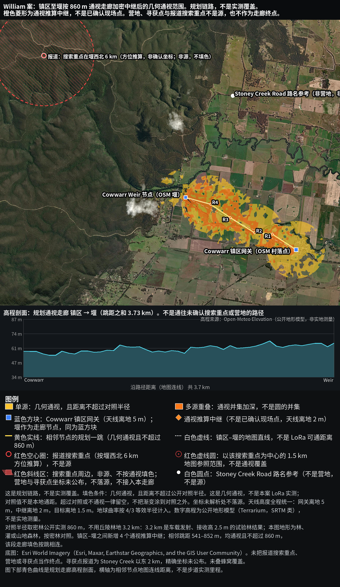
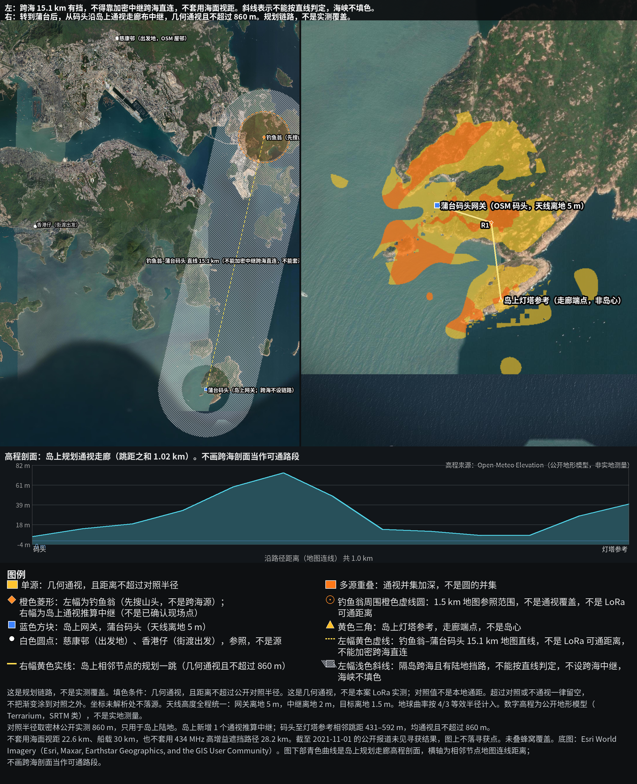
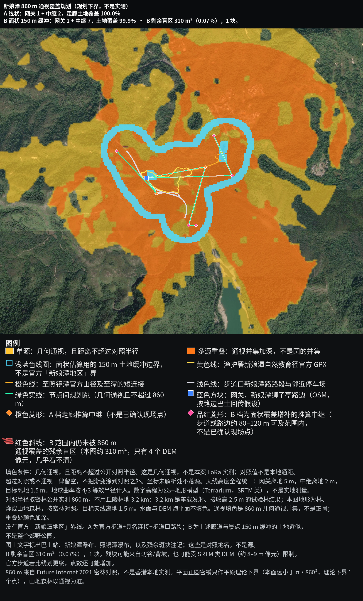

荒野搜救 LoRa mesh 通视规划
挂件发送卫星坐标，山径中继接力，网关把报文送到搜救地图。
定位节点 → LoRa 中继 → 道路端网关 → 接收端
香港布点重评｜任一站掉线后还能送到哪里
以已列出的规划连接为底稿，逐台移除一台设备，再找剩余节点通往任一可用网关的最短路径。默认给首次收到挂件报文的节点 3 次转发额度，另外显示 7 次对照。距离筛选用原 860 m 模型。下图统计节点，现场覆盖仍要用最终设备走测。
香港试点前置条件：先核对 920–925 MHz 设备、实际固件及许可或豁免。HKCA 1078 第 2 版对适用设备要求跳频。AS923-1 是 LoRaWAN 区域信道方案，固定频槽的 Meshtastic 设置需另行核对。香港设备规格 · Meshtastic 频槽。
图例：■ 网关 ● 规划节点 × 停机 绿色可回传 红色失去回传 灰色原本超跳 紫虚线为待测旁路 紫圈为备用出口踏勘侧。紫色候选不计入当前结果。
验收：先在新娘潭入口、林下转弯、照镜潭支线和溪沟设测试点。每点先测正常，再分别停掉一个中继、网关或上联，测报文送达率和首个带坐标的 SOS 到达时间。便携端本地收到与指挥地图收到分开记。重点路段要在单站故障后仍达到项目约定的送达时限。SOS 维持静止定时发、运动提前发。
怎么计算
用 Terrarium 数字高程建立地形剖面，按 4/3 等效地球半径修正。网关、中继、挂件的天线分别取离地 5、2、1.5 m。
单跳：两点平面距离 ≤ 860 m，且连线高于沿途地形。逐段连接候选节点，查每个覆盖点能否沿链路回到联网网关，并按实际固件配置核对转发次数。
取 860 m 的理由：868 MHz、10.4 dBm、SF12 的密林试验在 860 m 处收到少量报文，因此用该距离筛选候选点，走测再据送达率定站距。密林试验。
覆盖比例：通视且在距离上限内的陆地像素面积 ÷ 评估区的陆地面积。浅黄是单站通视，深橙是多站重叠。
展开地图图例
- 浅黄填色：单源几何通视，且平面距离不超过 860 m。边缘不规则，不是圆。
- 深橙填色：多源重叠，通视范围叠加后加深，不是圆的并集。
- 蓝色方块：网关，天线离地 5 m。
- 橙色菱形：通视推算中继，天线离地 2 m，不是已确认现场点。
- 黄色三角：具名点。西贡为白腊；瓦拉米为佳心与山屋；蒲台右幅为灯塔参考。
- 黄色实线：相邻节点的规划一跳（几何通视且不超过 860 m）。新娘潭图上这条线是绿色。
- 白色虚线：地名之间的地图直线，不是 LoRa 可通距离，也不是步道里程。
- 青色曲线：西贡、William、蒲台、瓦拉米四图下部的规划走廊高程剖面。
- 西贡：灰色空心圈是白腊–东坝中点，不是花山峰位，不是源。
- 白色圆点：参照，不是源。西贡为破边洲；William 为 Stoney Creek Road 路名，不是营地；蒲台为慈康邨、香港仔。
- William：红色空心圈是报道搜索重点，按堰西北约 6 km 的方位推算，不是源。红色虚线圆是以该点为中心的 1.5 km 地图参照，不是通视范围。
- 红色或浅色斜线：不上色。William 为搜索重点周边；蒲台左幅为隔岛有挡的海峡，不设跨海中继；新娘潭为缓冲内残余未覆盖。
- 新娘潭：浅蓝色线圈是 150 m 土地缓冲，不是官方「新娘潭地区」界。
- 新娘潭黄线：渔护署新娘潭自然教育径官方 GPX。
- 新娘潭橙线：至照镜潭的连接。
- 新娘潭浅色线：步道口路段与停车场。
- 新娘潭绿色实线：规划跳，几何通视且不超过 860 m。
- 新娘潭品红菱形：150 m 缓冲档增补中继（B3–B7），不是已确认现场点。橙色菱形是走廊档中继 A1、A2。
五处案例
查看五处案例数据总表
| 案例 | 网关 | 中继 | 本规则下已相连 | 未接入 |
|---|---|---|---|---|
| 西贡东 | 北潭涌（主），万宜东坝（辅） | 白腊 + 15 个推算中继，共 16 个 | 北潭涌–白腊–东坝，跳距之和 8.87 km，相邻 60.1–859.0 m | 花山峰位 |
| William | Cowwarr 镇区；堰为走廊节点 | 4 个推算中继 | 镇区–堰，跳距之和 3.73 km，相邻 541.3–852.5 m | 营地、寻获点、报道搜索重点 |
| 蒲台 | 岛上码头一处 | 1 个推算中继 | 码头–灯塔参考，跳距之和 1.02 km（431.3 m、591.8 m）。不设跨海链 | 钓鱼翁–码头跨海 |
| 瓦拉米 | 南安或山风道路端；本链起点在南安 | 佳心 + 18 个推算中继；山屋是端点，不是网关 | 南安–山风–佳心–山屋，跳距之和 10.26 km。官方步道 14 km，现场可能要更多中继 | 7.5K、11.4K、谷底 |
| 新娘潭 | 狮子亭路边 1 处 | 走廊 2 个；150 m 缓冲共 7 个 | 走廊约 1.9 km，土地覆盖 100%；150 m 缓冲 43.0557 公顷，覆盖 99.93%，残余 309.6 m² | 无官方地区多边形 |
西贡东
事件报道：HK01（2026-05-26）。
布点：北潭涌和万宜东坝设网关，白腊设中继，另加 15 个推算中继。白腊至东坝用短跳绕过脊线转角。
计算：北潭涌 → 白腊，直线 6.51 km，12 段无线连接，每段 209.6–859.0 m。白腊 → 东坝，直线 1.73 km，5 段，每段 60.1–856.6 m。两段合计 8.87 km。
进场：北潭涌作为集结点。最新坐标在白腊侧，由白腊侧进场。坐标在东坝侧，由万宜东坝沿山径向白腊搜索。便携节点先在对应山径入口收包，再按报文坐标和时间选分岔。花山峰位待定位。
频段按香港 920–925 MHz、HKCA 1078 核对。

查看节点坐标与跳距
| 节点 | 纬度 | 经度 | 离地 m | 上一跳 | 跳距 m | 通视且 ≤ 860 m |
|---|---|---|---|---|---|---|
| 北潭涌主网关 | 22.3973323 | 114.3190286 | 5.0 | — | — | — |
| 推算中继 R1 | 22.393787611709506 | 114.32611070898054 | 2.0 | 北潭涌主网关 | 827.9 | 是 |
| 推算中继 R2 | 22.390063617225714 | 114.32958193908132 | 2.0 | 推算中继 R1 | 546.7 | 是 |
| 推算中继 R3 | 22.384341477482863 | 114.33187898272513 | 2.0 | 推算中继 R2 | 678.7 | 是 |
| 推算中继 R4 | 22.37860110889813 | 114.33745540039604 | 2.0 | 推算中继 R3 | 858.0 | 是 |
| 推算中继 R5 | 22.376831445522605 | 114.33815671075399 | 2.0 | 推算中继 R4 | 209.6 | 是 |
| 推算中继 R6 | 22.37119746040339 | 114.34341801257438 | 2.0 | 推算中继 R5 | 827.7 | 是 |
| 推算中继 R7 | 22.367404220761554 | 114.35069522623883 | 2.0 | 推算中继 R6 | 859.0 | 是 |
| 推算中继 R8 | 22.36261024843382 | 114.35037043132604 | 2.0 | 推算中继 R7 | 534.1 | 是 |
| 推算中继 R9 | 22.35629208066611 | 114.35510158538818 | 2.0 | 推算中继 R8 | 854.6 | 是 |
| 推算中继 R10 | 22.356307223799437 | 114.35741901397705 | 2.0 | 推算中继 R9 | 238.3 | 是 |
| 推算中继 R11 | 22.353925813790998 | 114.35824362608957 | 2.0 | 推算中继 R10 | 278.0 | 是 |
| 白腊中继 | 22.3532804 | 114.3607651 | 2.0 | 推算中继 R11 | 269.1 | 是 |
| 推算中继 R12 | 22.35749789211584 | 114.36773507256623 | 2.0 | 白腊中继 | 856.6 | 是 |
| 推算中继 R13 | 22.3578851731051 | 114.3688692994823 | 2.0 | 推算中继 R12 | 124.3 | 是 |
| 推算中继 R14 | 22.35806889969991 | 114.36941872087027 | 2.0 | 推算中继 R13 | 60.1 | 是 |
| 推算中继 R15 | 22.358258331074826 | 114.37101632664735 | 2.0 | 推算中继 R14 | 165.6 | 是 |
| 万宜东坝辅网关 | 22.364084 | 114.3729303 | 5.0 | 推算中继 R15 | 677.0 | 是 |
William
事件报道（ABC、7NEWS）：ABC（2026-11-11） · ABC（2026-11-12） · 7NEWS（2026-11-12）。
计算与布点：Cowwarr 镇区设联网网关，沿镇区至 Cowwarr Weir 的 3.66 km 直线走廊加 4 个中继。5 段，每段 541.3–852.5 m，累计 3.73 km。
进场：Cowwarr 镇区集结，便携节点先到 Cowwarr Weir 一侧可达点接收。按新坐标选进场路径。公开报道的搜索重点约在堰西北 6 km，寻获点缺精确坐标，这张镇区—堰图只确定接收起点。
频段按澳洲 915–928 MHz、LIPD 类许可 核对。挂件在人身上计位，不依赖留在营地的手机。

查看节点坐标与跳距
| 节点 | 纬度 | 经度 | 离地 m | 上一跳 | 跳距 m | 通视且 ≤ 860 m |
|---|---|---|---|---|---|---|
| Cowwarr 镇区网关 | -38.0140074 | 146.6964831 | 5.0 | — | — | — |
| 推算中继 R1 | -38.00979068081499 | 146.68838024139404 | 2.0 | Cowwarr 镇区网关 | 850.8 | 是 |
| 推算中继 R2 | -38.00938276908597 | 146.68222360981156 | 2.0 | 推算中继 R1 | 541.3 | 是 |
| 推算中继 R3 | -38.00532717973853 | 146.67396621594833 | 2.0 | 推算中继 R2 | 852.5 | 是 |
| 推算中继 R4 | -38.00172355511777 | 146.66720433259286 | 2.0 | 推算中继 R3 | 715.2 | 是 |
| Cowwarr Weir 节点 | -37.9999195 | 146.6587103 | 5.0 | 推算中继 R4 | 770.8 | 是 |
蒲台
事件报道：东方日报（2021-11-01）。
布点：岛上码头设网关，增加 1 个中继接灯塔方向。钓鱼翁至码头直线 15.1 km，中间有岛体遮挡，链路留在岛内。
计算与进场：码头至灯塔参考点直线 0.87 km，分 2 段，每段 431.3–591.8 m。由蒲台码头上岛，沿灯塔方向的步道收包，再按最新坐标转向目标一侧。
频段按香港 920–925 MHz、HKCA 1078 核对。

查看节点坐标与跳距
| 节点 | 纬度 | 经度 | 离地 m | 上一跳 | 跳距 m | 通视且 ≤ 860 m |
|---|---|---|---|---|---|---|
| 蒲台码头网关 | 22.1633438 | 114.2530887 | 5.0 | — | — | — |
| 推算中继 R1 | 22.16216534596124 | 114.25707864623519 | 2.0 | 蒲台码头网关 | 431.3 | 是 |
| 岛上灯塔参考（路径端点，非岛心） | 22.1568833 | 114.2577833 | 2.0 | 推算中继 R1 | 591.8 | 是 |
瓦拉米
事件及步道来源：中央社（2026-04-19） · 玉山国家公园管理处。
布点：南安设道路端网关，经山风、佳心向山屋布置 18 个推算中继；佳心另作为具名中继。
计算：南安 → 山风 10 段，山风 → 佳心 5 段，佳心 → 山屋 6 段。模型连线累计 10.26 km，实际步道约 14 km。分段核对至可用出口的转发额度。
进场：从山风登山口带便携节点沿主径进入。历史寻获区在约 7.5K 下方山谷，先由主径可通行处接收，再用报文坐标选谷侧接近路线。7.5K、11.4K 与谷底坐标待核。
频段按台湾 920–925 MHz、LP0002 室外 0.5 W 核对。

查看节点坐标与跳距
| 节点 | 纬度 | 经度 | 离地 m | 上一跳 | 跳距 m | 通视且 ≤ 860 m |
|---|---|---|---|---|---|---|
| 南安道路端网关 | 23.3011979 | 121.2584273 | 5.0 | — | — | — |
| 推算中继 R1 | 23.30357924165954 | 121.25307660786166 | 2.0 | 南安道路端网关 | 607.2 | 是 |
| 推算中继 R2 | 23.30392968900793 | 121.25269502311755 | 2.0 | 推算中继 R1 | 55.1 | 是 |
| 推算中继 R3 | 23.3094006192945 | 121.24693149669633 | 2.0 | 推算中继 R2 | 846.5 | 是 |
| 推算中继 R4 | 23.31518325776607 | 121.24160818325174 | 2.0 | 推算中继 R3 | 842.0 | 是 |
| 推算中继 R5 | 23.315693871706046 | 121.24090959448722 | 2.0 | 推算中继 R4 | 91.2 | 是 |
| 推算中继 R6 | 23.315989748532747 | 121.23982030142736 | 2.0 | 推算中继 R5 | 116.0 | 是 |
| 推算中继 R7 | 23.318154885952588 | 121.23765170269905 | 2.0 | 推算中继 R6 | 327.1 | 是 |
| 推算中继 R8 | 23.319300161735576 | 121.23621537999213 | 2.0 | 推算中继 R7 | 194.2 | 是 |
| 推算中继 R9 | 23.32415177204756 | 121.23484064093475 | 2.0 | 推算中继 R8 | 557.4 | 是 |
| 山风节点 | 23.3273643 | 121.230497 | 5.0 | 推算中继 R9 | 569.5 | 是 |
| 推算中继 R10 | 23.332190746157302 | 121.22397958382817 | 2.0 | 山风节点 | 854.9 | 是 |
| 推算中继 R11 | 23.333991560048965 | 121.22195445882824 | 2.0 | 推算中继 R10 | 287.8 | 是 |
| 推算中继 R12 | 23.335651538904326 | 121.22039961586518 | 2.0 | 推算中继 R11 | 243.5 | 是 |
| 推算中继 R13 | 23.341052253962026 | 121.21458583267042 | 2.0 | 推算中继 R12 | 844.4 | 是 |
| 佳心中继 | 23.345896 | 121.2132167 | 2.0 | 推算中继 R13 | 556.4 | 是 |
| 推算中继 R14 | 23.348047936958082 | 121.20533466339111 | 2.0 | 佳心中继 | 839.5 | 是 |
| 推算中继 R15 | 23.346053861562936 | 121.20443184499265 | 2.0 | 推算中继 R14 | 240.1 | 是 |
| 推算中继 R16 | 23.348047936958082 | 121.19786739349365 | 2.0 | 推算中继 R15 | 705.9 | 是 |
| 推算中继 R17 | 23.349562972411473 | 121.18960901859214 | 2.0 | 推算中继 R16 | 859.8 | 是 |
| 推算中继 R18 | 23.35220299877597 | 121.18629821930756 | 2.0 | 推算中继 R17 | 447.7 | 是 |
| 瓦拉米山屋（步道端点，非网关） | 23.3537493 | 121.1863941 | 2.0 | 推算中继 R18 | 172.2 | 是 |
新娘潭
范围：以新娘潭自然教育径、照镜潭连接径及步道口道路为基础，计算沿径和向外 150 m 两档。
沿径档：含停车场连接共 2.171 km，取路径两侧各 15 m 陆地。1 网关、2 中继，模型覆盖 5.06 公顷，比例 100%。
缓冲档：扩大至 150 m 陆地缓冲。1 网关、7 中继，430,247.0 ÷ 430,556.6 m² = 99.93%，余约 310 m²。
进场：从新娘潭狮子亭路边进入自然教育径。在入口先收包，再按坐标走新娘潭或照镜潭支线。只有旧坐标时，以坐标和时间建立搜索起点。
网关设在狮子亭路边（22.503112°N，114.236768°E）。A1、A2 距网关 391.2 m、121.8 m。入口地图。
径与地名来源：渔护署教育径，官方 GPX，地政总署地图，地质公园新娘潭。

查看节点坐标与跳距
| 节点 | 纬度 | 经度 | 离地 m | 地面高程 m | 上一跳 | 跳距 m | 本步新增覆盖 m² |
|---|---|---|---|---|---|---|---|
| 网关（狮子亭路边） | 22.503112 | 114.236768 | 5.0 | — | — | — | — |
| 推算中继 A1 | 22.503759561748183 | 114.24051143643234 | 2.0 | 64.4 | 网关（狮子亭路边） | 391.2 | 21284.1 |
| 推算中继 A2 | 22.5022056411579 | 114.2374334181844 | 2.0 | 77.1 | 网关（狮子亭路边） | 121.8 | 387.0 |
查看节点坐标与跳距
| 节点 | 纬度 | 经度 | 离地 m | 地面高程 m | 上一跳 | 跳距 m | 本步新增覆盖 m² |
|---|---|---|---|---|---|---|---|
| 网关（狮子亭路边） | 22.503112 | 114.236768 | 5.0 | — | — | — | — |
| 推算中继 A1 | 22.503759561748183 | 114.24051143643234 | 2.0 | 64.4 | 网关（狮子亭路边） | 391.2 | 21284.1 |
| 推算中继 A2 | 22.5022056411579 | 114.2374334181844 | 2.0 | 77.1 | 网关（狮子亭路边） | 121.8 | 387.0 |
| 推算中继 B3 | 22.503254557522755 | 114.24221245399292 | 2.0 | 127.2 | 网关（狮子亭路边） | 559.5 | 60677.4 |
| 推算中继 B4 | 22.500341772713995 | 114.23945055360717 | 2.0 | 53.3 | 推算中继 A1 | 395.4 | 31656.5 |
| 推算中继 B5 | 22.504673690916285 | 114.23489015099358 | 2.0 | 104.0 | 推算中继 A2 | 378.9 | 25695.0 |
| 推算中继 B6 | 22.505576644970454 | 114.24105210880005 | 2.0 | 114.9 | 推算中继 B3 | 284.4 | 14782.2 |
| 推算中继 B7 | 22.50034554501351 | 114.2399173239726 | 2.0 | 29.5 | 推算中继 B4 | 48.0 | 1780.2 |
SOS 固件｜静止定时发，移动提前发
按下 SOS 立即发第一包。有坐标就附上坐标和定位时间。还没定位时先发求助，取得新坐标后安排补发。SOS 模式持续到佩戴者主动取消。
静止也继续发。定时器到点就唤醒挂件，发送一份求助短包。发完关闭 LoRa 接收并休眠，等待下一次定时或运动触发。
持续运动时提前发。低功耗 IMU 检测到持续运动后唤醒主控，尝试更新 GNSS 坐标。拿到新位置后，满足最小发包间隔就提前上报。单次抖动过滤掉，连续运动时按间隔合并发送。定位暂时失败时，定时求助照常发，旧坐标保留原定位时间。
程序逻辑：定时到期或运动触发 → 更新可用坐标 → 检查发包间隔和信道 → 发短包 → 更新下次发包时间 → 休眠。两种触发同时发生时合并成一包。首轮走测对比静止与移动的送达率、首包时延和整机耗电，再定时间间隔。
外部节点：固定中继、网关和搜救队设备保持正常收发。接收端按设备 ID、SOS 编号和包序号去重，展示最新坐标及定位时间。需要回执时，挂件可在发包后短暂开启接收窗口。
发射前保留信道活动检测（CAD）。Meshtastic 的 CLIENT_MUTE 关闭替其他设备转发的功能，挂件的收发休眠需通过固件控制。设备角色 · 转发与信道检测。